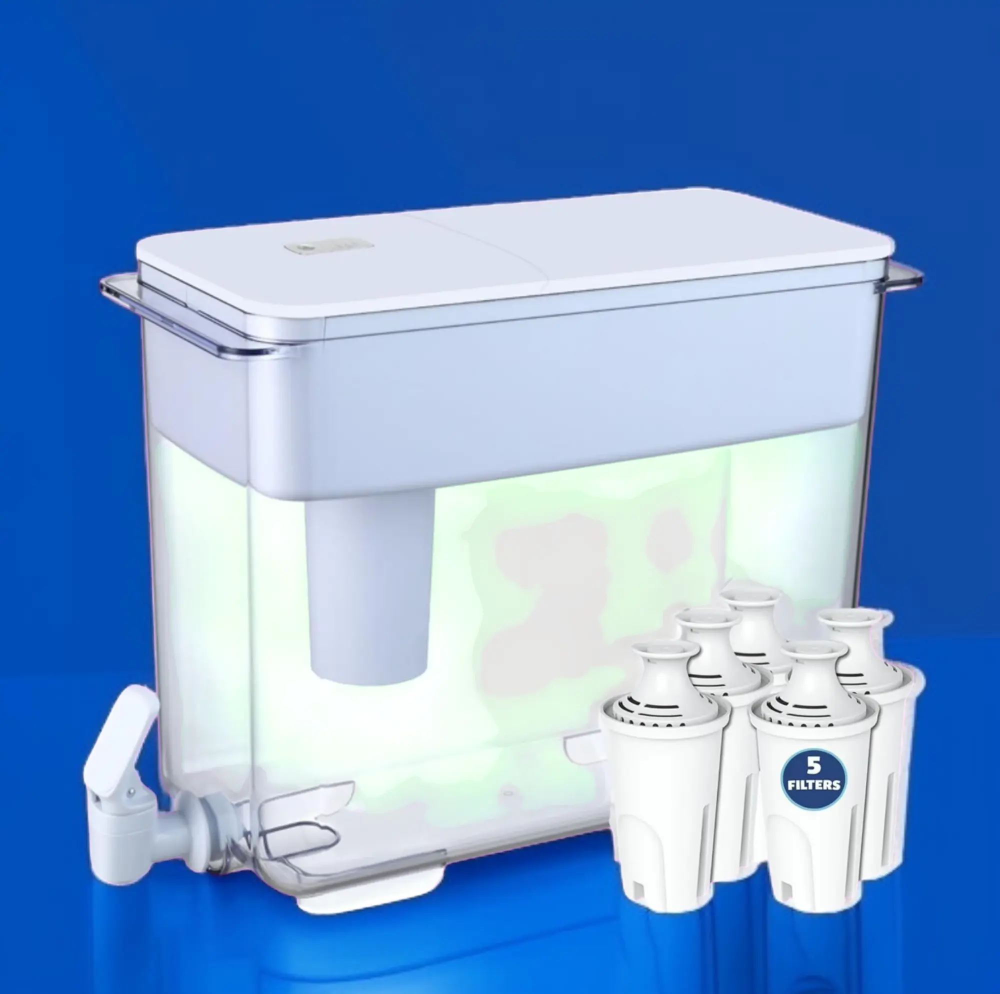

30-Cup Water Filter Pitcher with 5 Filters & Electronic Reminder – Compatible with Brita Ultramax & Dispensers.

This 30-cup water filter pitcher offers a large capacity solution for clean and fresh drinking water. It includes 5 filters and a smart electronic reminder system. Compatible with Brita Ultramax, Large Brita Pitchers, and Dispensers.
Key Features
- 30-cup high-capacity pitcher – great for families or offices
- Comes with 5 filters included for long-term use
- Electronic filter change reminder ensures better performance
- Compatible with most Brita pitchers and dispensers
Advantages
- Large size – fewer refills needed
- Clean, great-tasting water without chlorine taste
- Filter reminder adds convenience
- Environmentally friendly alternative to bottled water
Disadvantages
- Can be bulky for small refrigerators
- Initial filter setup may take a few minutes